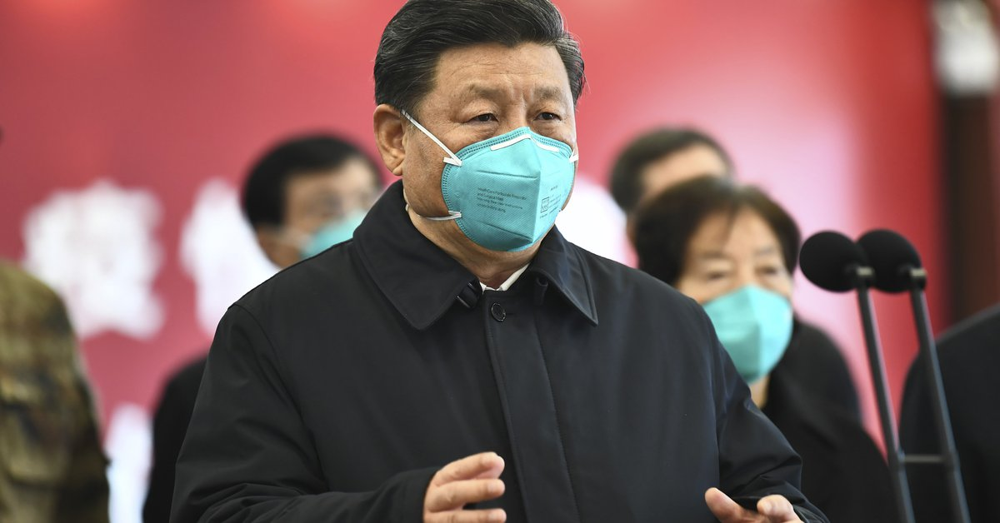
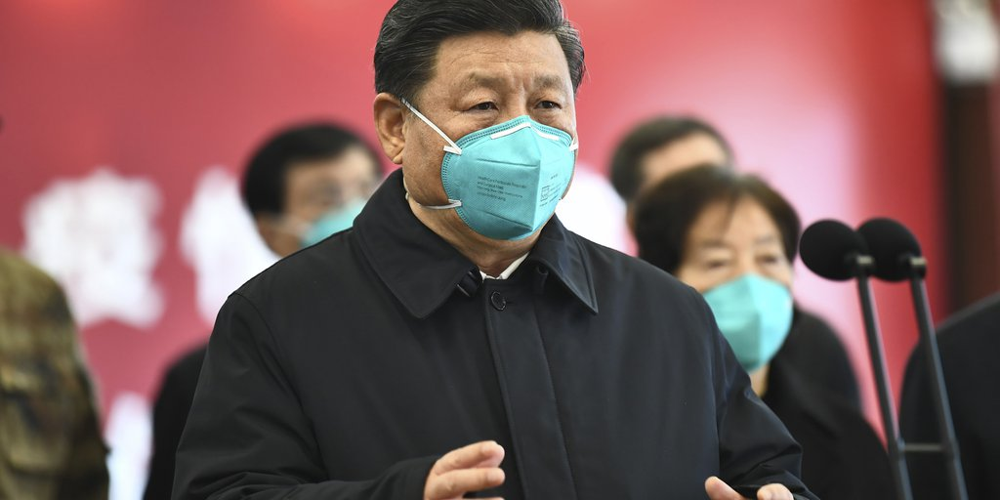
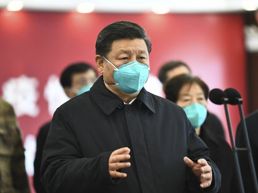
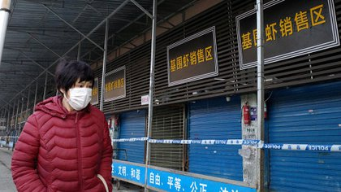
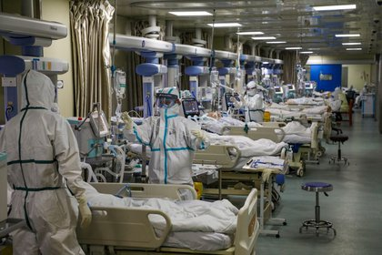

Ahora China quiere imponer una nueva versión del origen del coronavirus: cuáles son los países señalados por el régimen de Xi Jinping

Ni murciélagos ni pangolines.El régimen chino quiere una nueva narrativa: el coronavirus que hasta el momento mató a 1.537.785 personas en todo el mundo -según datos registrados por Johns Hopkins University of Medicine- no nació en Wuhan, provincia de Hubei, sino que se originó en otras latitudes, otros países que lo exportaron a esa región.
Más precisamente, el virus que provoca la enfermedad COVID-19 fue transportado por paquetes de alimentos congelados que fueron exportados por otras naciones a China.El 28 de octubre pasado,
Infobae ya advertía la intención de Beijing de borrar los registros que indicaban a aquella ciudad de 10 millones de habitantes como el epicentro del nuevo coronavirus.
Para hacerlo, el régimen conducido por Xi Jinping utilizó a una de sus herramientas más fieles: el diario
Global Times .Ese periódico es un órgano dependiente del Partido Comunista Chino (PCC) que responde a sus planes y estrategias.Es la voz del partido ante el mundo.Creerle es seguir la versión que intenta imponer el movimiento que rige la vida de los chinos con mano de hierro desde 1949.

'Nuestro conocimiento del nuevo virus se ha profundizado en los últimos meses, y dado que se descubrió que los crecientes brotes esporádicos en China estaban relacionados con productos importados de la cadena de frío de otras partes del mundo -incluidos Europa y el continente americano- en los cuales se descubrieron signos del coronavirus antes de Wuhan, plantea una nueva hipótesis: ¿el brote temprano en Wuhan se originó a partir de alimentos congelados importados?', plantea
Global Times .
La nota, calificada como 'investigación' por los editores del medio, fue firmada por tres periodistas: Zhao Yusha, Cao Siqi y Fan Lingzhi.Para los redactores 'no se puede descartar la posibilidad de que el coronavirus se haya transmitido de los productos de la cadena de frío a Wuhan, o más específicamente, al mercado húmedo de Huanan, donde alguna vez prevaleció la venta de productos congelados'.
Lo que no explican los investigadores es por qué si el virus ya estaba en otras partes del mundo, el brote más significativo -y no controlado, ni informado a las autoridades sanitarias mundiales- se vivió en Wuhan y no en los países donde habría nacido.
Para el Partido Comunista Chino, la población de Wuhan bien pudo ser una víctima de otras naciones que esparcieron el virus por el resto del planeta.'Las infecciones repetidas causadas por productos importados de la cadena de frío y los informes sobre cómo se encontraron signos de coronavirus en otras partes del mundo impulsaron a los virólogos a pensar si Wuhan también era víctima de dicha ruta de transmisión', señala el artículo del régimen.
Hace dos semanas, el director del programa de emergencias sanitarias de la Organización Mundial de la Salud (OMS) consideró 'extremadamente importante' que su equipo internacional visite China para rastrear los orígenes del coronavirus, y agregó que a la agencia de salud de las Naciones Unidas se le ha asegurado que ese viaje se llevará a cabo 'lo más pronto posible'.
Desde el inicio de la pandemia, China ha denegado acceso a investigadores independientes internacionales para determinar qué ocurrió en Wuhan y sobre todo saber por qué se demoró en informar sobre la letalidad del virus.La OMS ha quedado en la mira por haber estado presionada por el régimen chino cuando surgió el COVID-19.
Al inicio de la epidemia, incluso, el régimen quiso responsabilizar a los Estados Unidos de la transmisión del virus.Ahora, a esa teoría conspirativa se le suma la de la 'cadena de frío en alimentos congelados'.'Wu Zunyou, epidemiólogo jefe del Centro Chino para el Control y la Prevención de Enfermedades, dijo que en retrospectiva al brote temprano en Wuhan, los pacientes provenían principalmente del área de mariscos congelados', dice
Global Times .Resulta extraño que otros envíos de comida congelada a otras partes del mundo no hubiera ocasionado mismo resultado viral.

Ecuador, Chile, Brasil y Uruguay -entre otros países- están en la mira del diario del PCC.'La ciudad (Wuhan) también importó bistec australiano, cerezas chilenas y mariscos ecuatorianos antes de 2019, según la información del sitio web de la oficina de comercio de la ciudad.Las declaraciones publicadas por el Departamento de Comercio Provincial de Hubei muestran que en 2018 y 2019, las empresas de comercio exterior han importado carne de Canadá, Brasil y España.La aduana de Wuhan dijo que de enero a noviembre de 2019, la provincia de Hubei, que gobierna Wuhan, importó 470 millones de yuanes de productos congelados, un 174,2 por ciento más en comparación con el mismo período del año anterior, que marcó el aumento más rápido de todos los productos importados.En el último caso, el empaque exterior de carne congelada importada de Brasil y Uruguay a Wuhan dio positivo por coronavirus, dijeron los CDC de Wuhan el domingo', sembró sospechas
Global Times .
'Siguiendo estas pistas, se encontró que los productos del mar importados de varios países estaban contaminados con el nuevo coronavirus.Posteriormente, las autoridades aduaneras chinas en muchas ciudades de todo el país realizaron pruebas de productos cárnicos o mariscos congelados importados y encontraron que muchos de estos productos dieron positivo por coronavirus', señaló el periódico del partido.
Así, el régimen conducido por Xi Jinping intenta crear una nueva narrativa que la exculpe de la responsabilidad de no haber alertado al mundo a tiempo y de no haber tomado medidas para contener la propagación de la nueva cepa.En cambio, Beijing se abocó a acallar a los médicos que alertaban sobre la enfermedad respiratoria que estaba matando a cientos de pacientes en Wuhan.Será la nueva versión que intentará imponer China desde sus embajadas.Sobre todo, intentará que sea adoptada por aquellos países que más dependen de su dinero.
MÁS SOBRE ESTE TEMA:
Posted On: 2020-12-07T00:00:00


Content Date: 2020-12-07
Download Date: 2021-03-17
Document ID: L0C049B9K